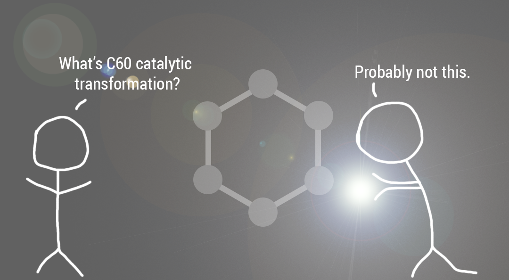

History of Graphene
Navigation: Uses and Applications of Graphene |
The concept of graphene was first proposed in the late 1940s as "single layered graphite", but it wasn't possible to get a single layer of graphite on its own until 2004.
Single layers of graphite were studied with electron microscopes, but graphene production was still impossible.
Efforts to make extremely thin graphite films started in the 1990s, but were not able to produce films any thinner that 50 layers.
In 2004, Andre Geim and Kostya Novoselov produced graphene using the "scotch tape method", or as it's otherwise known, the exfoliation method.
The two used scotch tape to take a single layer off of a piece of graphite, creating graphene.
Geim and Novoselov were rewarded the Nobel Prize in Physics in 2010 for their efforts in studying graphene.
|
Since then, more methods for producing graphene have been developed to facilitate the use of graphene in its various applications, such as:
|  |
| Previous: | Next: |
| Homepage | Properties of Graphene |